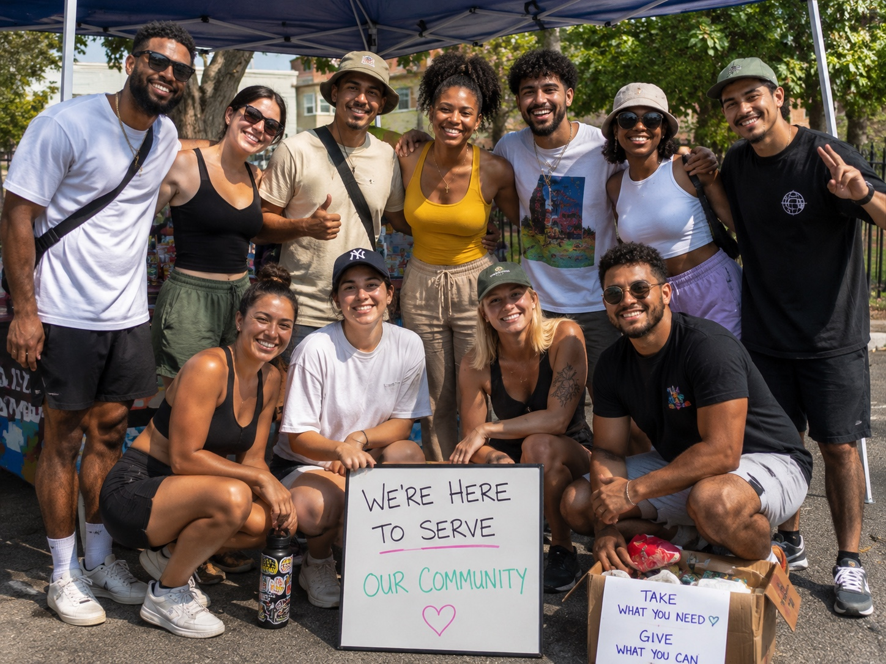

Healthcare & Prevention
Testing referrals, PrEP information, wellness resources, and practical sexual health education.
Heartland Pride Center connects LGBTQ+ individuals, families, allies, and partners with affirming resources, trusted support, prevention education, and meaningful community across Polk County and Florida's Heartland.

Welcome
Choose the path that fits why you came here. No maze. No guesswork. Just a clear place to begin.
Connect with affirming resources, crisis support, housing, healthcare, mental health services, and more.
📚Explore the growing directory of trusted organizations, providers, businesses, and community services.
🗺️Explore the Affirming Business Network or apply to have your business reviewed for public listing.
💙Help expand outreach, prevention education, and access to affirming resources across Florida's Heartland.
Together
Land of Hearts
The Heartland Pride Center Affirming Business Network helps community members find local businesses choosing visibility, welcome, and connection. Businesses can apply to be reviewed and added to the public Land of Hearts.
Testing referrals, PrEP information, wellness resources, and practical sexual health education.
Connection to affirming counseling, peer support options, wellness programs, and crisis resources.
Housing, food, safety planning, emergency assistance, and basic-needs resource navigation.
Support finding legal resources, identity-document help, job readiness, and affirming workforce connections.
Local groups, businesses, partners, events, volunteers, and opportunities to build connection.
Crisis, shelter, safety, sexual assault, domestic violence, substance use, and urgent support resources.
Our promise
Not just during Pride. Not just in big cities. Every day, right here in Florida's Heartland. Whether you're looking for support, hoping to give back, or searching for community, Heartland Pride Center is here to help you take the next step.
About Heartland Pride Center
Heartland Pride Center serves Polk County and the surrounding Central Florida Heartland region by connecting people with affirming resources, strengthening community partnerships, and creating visible support for LGBTQ+ people, families, allies, and neighbors.
Helping people find trusted, affirming places to start.
Expanding access to practical HIV/STI prevention information and referrals.
Building pathways for volunteers, partners, allies, and community members to show up together.
Community in motion
HPC is here for the everyday moments too: finding support, connecting with people, showing up for neighbors, and building a stronger Heartland together.
Build with us
HPC welcomes conversations with clinics, nonprofits, schools, faith communities, businesses, civic groups, and neighbors ready to help build a stronger, safer, more connected Heartland.
Start a ConversationDonate
Your donation helps fund outreach supplies, prevention education, resource materials, community events, technology, and the infrastructure needed to serve Polk County well.
DonateLet's connect
Serving Polk County and the surrounding Central Florida Heartland region.
Questions, partnerships, volunteer interest, resource ideas, or community connection can start here.